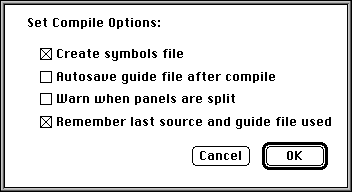

Setting Compile Options
By specifying compile options, you can adjust the compile process to fit your needs. For example, you can specify when you want Guide Maker to save your guide file--whether you want it to save it immediately after your guide file has finished compiling or when you choose Save from the File menu.To set compile options, select the Set Compile Options command from the Build menu; Guide Maker displays the compile options dialog box shown in Figure 5-4.
Figure 5-4 Compile options dialog box showing default settings

Figure 5-4 illustrates the default compile settings. Depending on your compile needs, you can select and deselect any of these compile settings.
- Create symbols file. A symbols file contains symbolic information that you use when you test your guide file. If you don't create a symbols file, you won't be able to generate the test reports--Names to IDs and Guide File Info--when you test your guide file. For information on these reports, see the chapter "Testing Your Guide File." You should not include the symbols file when you distribute your guide file. Guide Maker automatically generates a symbols file. If you don't want it to, then deselect this compile option.
- Autosave guide file after compile. To spare yourself the last step in the compiling process (step 4, saving your guide file), you can, by checking this compile option, have Guide Maker automatically save your guide file.
- Warn when panels are split. If the content of one of your panels is larger than the panel itself, Guide Maker splits the panel into several to accommodate it. Guide Maker does not warn you when it does this. If you would like to receive a warning, select this compile option. (For information on how to extend the maximum height of a panel, see the chapter "Guide Script Command Reference.")
- Remember last source and guide file used. Guide Maker keeps track of the last files you used in the compile process. Thus, once you've specified your build file and guide file, you needn't select them every time you open Guide Maker. If you don't want Guide Maker to remember the last files used, then deselect this option.